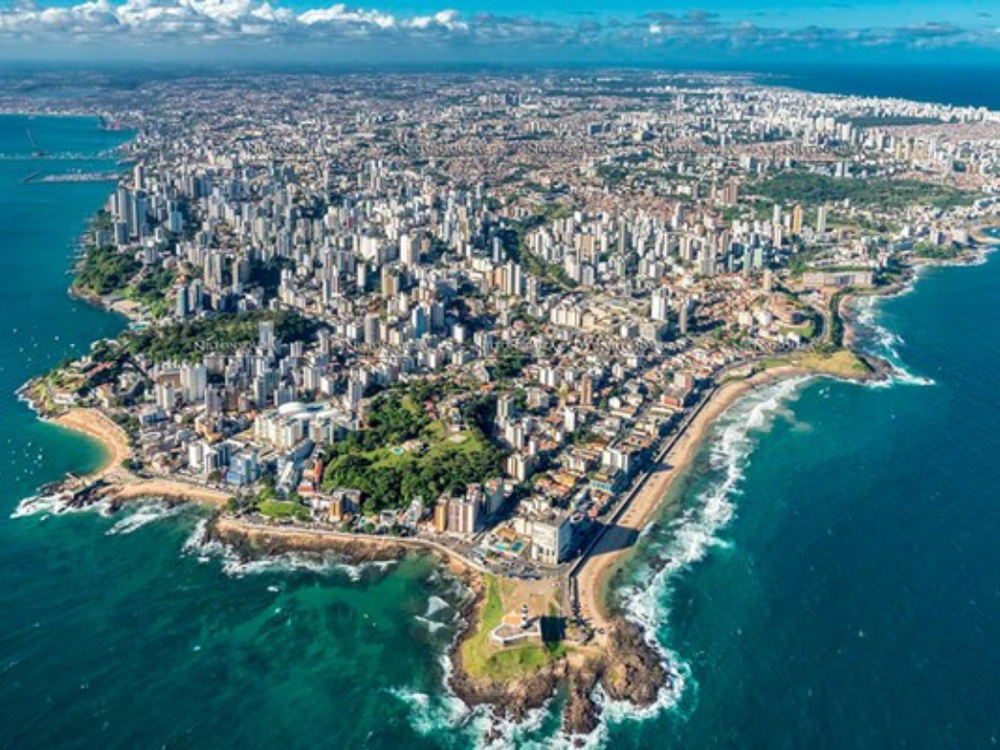

O estado da Bahia é um dos mais importantes da região Nordeste do Brasil, conhecido por sua forte cultura e belas paisagens. Sua capital, Salvador, possui grande valor histórico e cultural, além de famosas festas populares como o Carnaval. A Bahia também se destaca pela culinária típica, com pratos como acarajé e moqueca. O turismo, a agricultura e o comércio são atividades importantes para a economia do estado.

Voltar